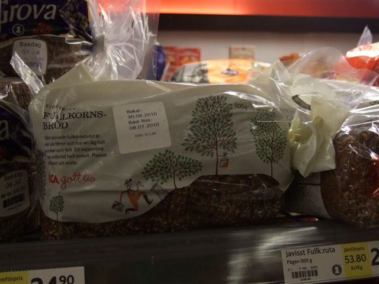

Web Site Blog
O Bread
- Details
- Last Updated on 02 November 2012
During my recent cycle tour of Sweden came across this special bread for night orienteering.

But not being into Night O, I had some ice cream instead to celebrate the completion of my 2000km circuit.
May be cycling past all those forests will prompt me to get of my bike and take up O again ?
Looking forward to returning to Roanhead for the LOC Cumbria gallopen event on the 24th October 2010. I think my last visit was for the 1994 Club Championships. My singe first place, abet in a handicapped event.
With a little help from....
- Details
- Last Updated on 30 December 2012
This web site would not have been possible with out lots of Open Source Developers spread across the World I have listed them, with some commercial suppliers, in >> Acknowledgements.
Within LOC thanks to:
Members of the LOC Web Group for their feedback and advise
Sheila Hobson, Iain Ward-Smith and Jim Dominy for advise and feedback
Bob Foster and John Nash for their guidance.
But as ever errors and omissions remain my responsibility.
LOC Club Champion 1994
photo (and garland?) courtesy Carol McNeil
Which Browser ?
- Details
- Last Updated on 02 November 2012
The site looks best when viewed in a browser that fully supports CSS3 style sheets.
>> Google Chrome
>> Firefox 3.5 or later
>> Apple Safari
On Microsoft Internet Explorer and Opera you miss out on rounded corners and drop shadows on the front page.
Microsoft Internet Explorer is the most robust browser to add & amend articles etc as Firefox and Google Chrome seems to sometimes get stuck when executing the Java Script attached to the save button. [But I still use Chrome].
The site is tested with IE6 and IE7 but I strongly recommend you use >> IE8 if you chose IE.
Do not have a Apple iphone, so not sure if the site is usable, but curious to know if it works.